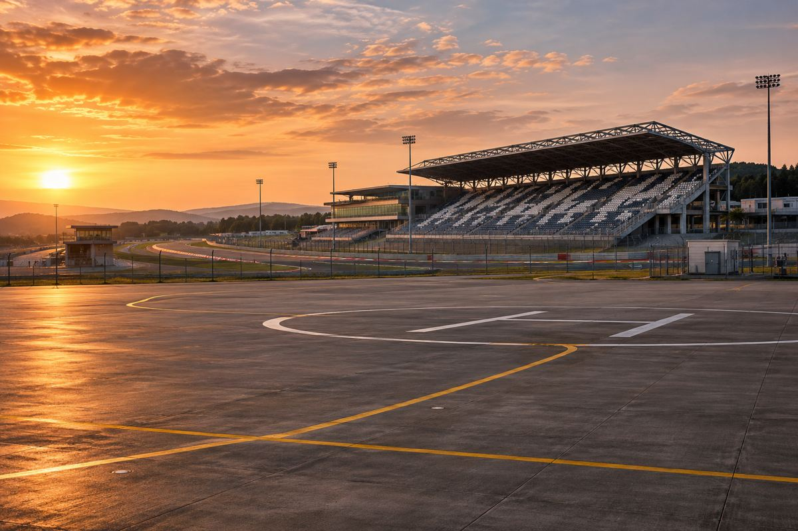

항공 / EXPLAINED
아처와 F1, 경기장 전기 에어택시 연계 검토
다년 파트너십이 발표됐다. 실제 승객 수송 시점과 노선은 아직 공개되지 않았다.

아처 에이비에이션과 포뮬러원은 11월 12일 다년 파트너십을 발표했다. 아처는 상업 운영을 추진하는 미국·중동·아시아·유럽 일부 시장과 맞는 그랑프리에 참여하고, 양측은 경기장과 주변을 잇는 전기 에어택시 서비스를 검토하기로 했다. 공개 자료가 확인해 주는 새 변화는 협력 범위다. 관람객이 구매할 항공권이나 운항 노선, 서비스 개시일은 함께 발표되지 않았다.
아처는 전기로 추진하는 수직이착륙 항공기를 개발하는 기업이다. 미드나이트는 가까운 도시 구간을 여러 차례 오가는 용도로 개발 중인 기체다. eVTOL은 전기로 움직이며 수직으로 이착륙하도록 설계된 항공기를 가리킨다. 일반 여객기가 쓰는 긴 활주로가 없어도 이착륙할 수 있는 구상을 뒷받침하지만, 승객 수송에는 기체와 운항 승인, 이용 가능한 이착륙 장소가 각각 필요하다.
회사에 따르면 미드나이트는 오스틴 미국 그랑프리에서 이미 전시됐으며, 올해 라스베이거스와 아부다비 그랑프리에서도 전시할 계획이다. 전시 장소에서 관람객에게 기체를 보여 주는 일정과 그 장소에서 실제 승객을 태우고 이착륙하는 일정은 따로 확인해야 한다. 발표 속 전시 기록은 협력이 일부 행사에 먼저 적용된 사례다. 공개된 날짜나 장소만 가지고 내년 경기 관람권에 항공 이동이 포함된다고 해석할 근거는 없다.
경기장 주변에서는 짧은 시간에 여러 사람이 몰린다. 편집부는 에어택시의 가능성을 따질 때 공중에 있는 시간보다 양쪽 착륙 지점의 위치와 처리량이 먼저 중요해질 것으로 본다. 몇 분 비행하더라도 출발장까지 차를 타고 올라가거나 도착장부터 경기장의 지정 입구까지 걸어야 할 수 있다. 시간대마다 태울 수 있는 인원과 배터리 충전 시간, 대기 위치를 함께 봐야 도로 이동보다 얼마나 절약하는지 비교할 수 있다.
전동 추진은 기체가 비행 중 연료를 직접 태우지 않는 설계에 해당한다. 그러나 전력 생산과 배터리, 지상 이동을 포함한 전체 환경 부담은 별도의 계산이 필요하다. 경기장 주변 소음도 비행 경로와 횟수, 주변 지형에 따라 체감이 달라질 수 있다. 이번 발표는 상업 운항에서의 소음 측정치나 수송 인원과 요금을 제시하지 않았다. 비행 횟수와 지상 설비가 정해진 뒤에야 다른 교통수단과 같은 단위로 비교할 수 있다.
운영 계획을 볼 때는 경기장 바깥까지 가는 편과 경기 뒤 돌아오는 편을 각각 따져야 한다. 관람객이 경기 시작 전에는 여러 시간에 걸쳐 도착하지만 종료 직후에는 한꺼번에 나올 수 있기 때문이다. 같은 수의 항공기가 있어도 출발 수요가 몰리면 대기 시간이 길어질 수 있다. 편집부의 이런 예상은 특정 그랑프리의 수요 예측이나 계약상 수송 약속이 아니다. 양측이 실제 검토에 들어가면 행사별로 다른 혼잡 시간과 대기 공간을 어떻게 반영하는지가 관건이다.
F1 팬에게 가까운 일정은 올해 두 행사에서의 전시 계획이다. 경기장 연계 승객 수송은 기체 승인과 운영 여건이 갖춰지고 판매 날짜 및 이착륙 장소가 공개된 뒤에 평가할 수 있다. 그때에는 편도 비행 시간과 함께 경기장 입장 동선, 기상으로 운항을 못 할 때 제공되는 대체 이동, 마지막 귀가편의 시간도 중요한 정보가 된다.